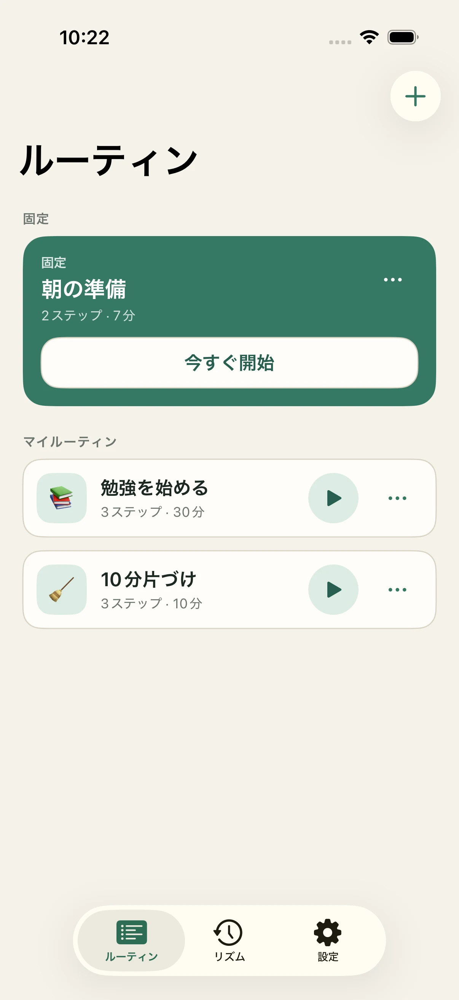
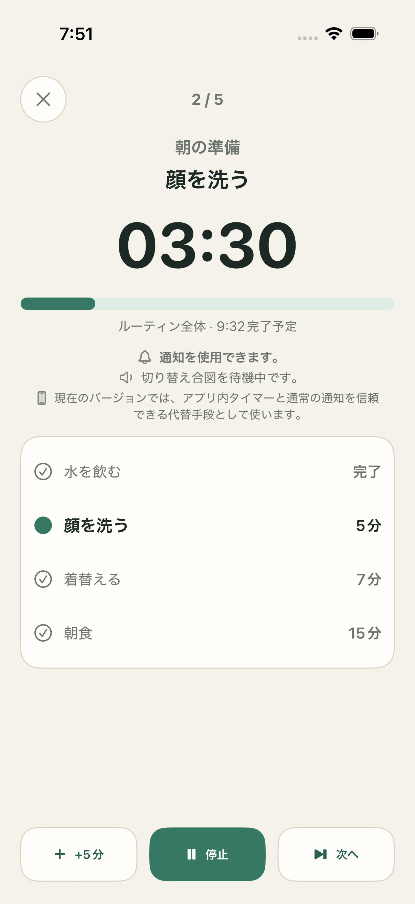
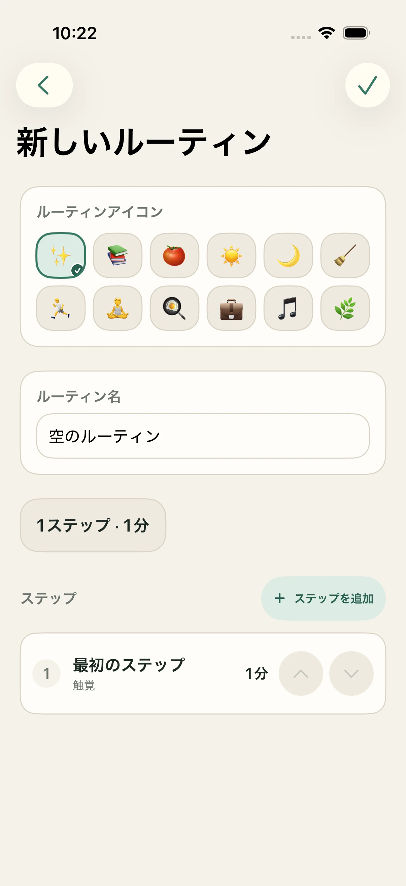
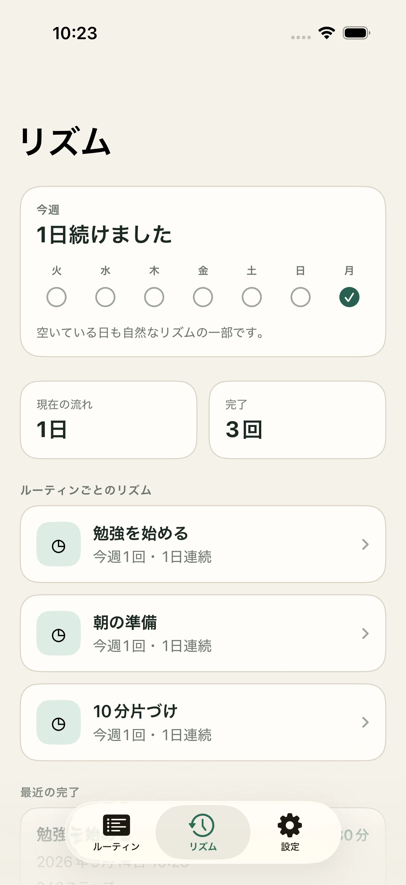

01
ルーティンから始める
朝、勉強、掃除、運動のルーティンをまとめ、よく使うものを固定できます。


ひとつのルーティン、明確な流れ
一度順序を作れば、StepCueがルーティン全体を見やすく、続けやすく保ちます。
朝、勉強、掃除、運動のルーティンをまとめ、よく使うものを固定できます。

ステップ名と時間を決め、自分に合う順番に並べます。

評価せずに振り返り。最近の完了と続けてきたルーティンを確認できます。

信頼のための設計